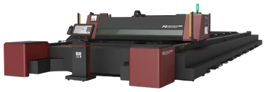
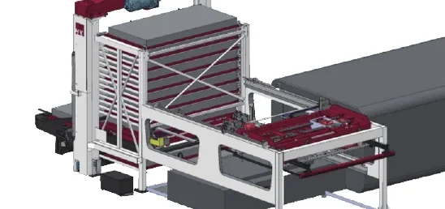
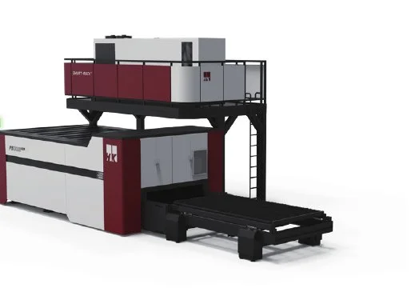
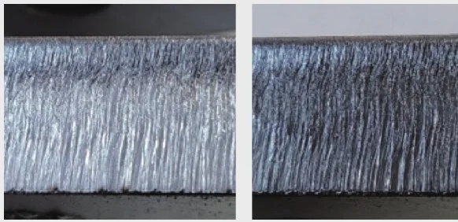
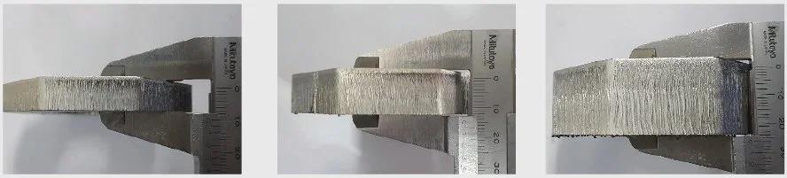

产品信息 · HK LASER
光纤激光切割机
经营从钢板上切出零件的平面加工机，以及在圆管、方管上加工孔和轮廓的管材专用机。根据原材料的形状和尺寸，组合切割机、材料交换工作台和自动分拣。
HK LASER 的切割机
请选择加工材料的形状，对比照片和规格。

上料、切割、分拣
S-Matic K315
板材上料、激光切割、零件分拣、余料回收在一条生产线上完成。
- 加工尺寸
- 3,000 × 1,500 mm
- 特点
- 从上料到分拣全自动
- 设备尺寸
- 15,593 × 6,158 × 3,679 mm

抽出式倾斜工作台
KUBE 1212 FIBER
配备适合小型板材加工的正方形工作台，可从正面取放材料。
- 加工尺寸
- 1,240 × 1,240 mm
- 特点
- 抽出式倾斜工作台
- 设备尺寸
- 4,010 × 2,210 × 2,180 mm

单、双工作台规格
FL 2512 FIBER
可选手动抽出的单工作台规格，或使用升降式穿梭台的双工作台规格。
- 加工尺寸
- 1,240 × 2,490 mm
- 特点
- 可选单、双工作台
- 设备尺寸
- 4,800 × 2,320 × 2,680 mm

侧面上料
FL 3015 FIBER
通过大型侧门取放定尺板材的激光切割机。
- 加工尺寸
- 3,048 × 1,524 mm
- 特点
- 侧门上料
- 设备尺寸
- 4,908 × 9,290 mm

从正面、侧面作业
RS3015 FIBER
通过正面和侧面的门，可触及加工室内的工件。
- 加工尺寸
- 3,048 × 1,524 mm
- 特点
- 2.5 G 高速运动
- 设备尺寸
- 2,270 × 11,250 mm

长尺板材、双开门
FS Series
可根据板材长度选择加工范围的系列。照片为 FS3015 FIBER。
- 加工尺寸
- 3,048 × 1,524 – 8,250 × 2,540 mm
- 特点
- 6 种工作台尺寸
- 设备尺寸
- 3,300 × 11,218 mm (FS3015)

大型钢板用龙门
FO Series
龙门架在大型钢板上方移动的开放式切割机。照片为 FO12025 FIBER。
- 加工尺寸
- 12,192 × 2,540 – 30,480 × 3,048 mm
- 特点
- 大型钢板、坡口加工
- 设备尺寸
- 6,200 × 21,000 mm (FO12025)

材料检测、水平穿梭台
HD Series
具备材料自动检测和水平穿梭工作台的板材激光切割机。所载机型为 HD3015。
- 加工尺寸
- 3,048 × 1,524 – 12,000 × 4,000 mm
- 特点
- 水平穿梭工作台
- 设备尺寸
- 2,850 × 8,604 mm (HD3015)

重视品质、大幅降低价格的主力机
FC3015 FIBER
在把切割品质放在首位的同时大幅降低价格的 3015 级切割机。用升降式穿梭工作台交换材料。
- 加工尺寸
- 3,048 × 1,524 mm
- 特点
- 重视品质、大幅降低价格的主力机
- 设备尺寸
- 3,283 × 10,632 mm

圆管 Ø12–273 mm
TL6527-S
加工圆管、方管的管材激光切割机。日本规格 6 kW 机型适用于外径 12～273 mm 的圆管。
- 加工尺寸
- Ø12–273 mm × 6,500 mm
- 特点
- 数字卡盘高速加工
- 设备尺寸
- 12,500 × 4,700 × 2,600 mm

圆管 Ø40–360 mm
TL9036-X
适用于大口径、长尺管材的激光切割机。圆管可加工至外径 360 mm，方管可加工至 250 mm 见方。
- 加工尺寸
- Ø40–360 mm × 9,000 mm
- 特点
- 3D 坡口、3+1 双卡盘
- 设备尺寸
- 20,500 × 6,500 × 3,200 mm
数值对应所载机型和构成。安装条件和选配请在报价时确认。
自动化系统与选配
与加工机组合，可在上料、下料、存储和准备作业上节省人力。
自动化系统

智能上料机
自动上料，有摆臂式和横移式。适用工作台 3015、4015、4020。

智能单元
自动完成上料和成品下料。最大堆载 3,000 kg。

智能料塔
集上料、下料、存储于一体的料库，共 8 层。

8 层自动化料塔
8 层料塔与加工机连接，每层最大 2 t。布局可按需求设计。
选配

智能喷嘴更换器
可收纳 12 个喷嘴并自动更换，缩短停机时间。

光束检测器
以光学方式确认光束中心，防止偏移造成的不良。

智能滚珠台
便于材料取放并防止划伤。板厚最大 20 mm。

智能机架
将周边设备布置在主机上方，节省安装空间。

反向布局
门、工作台和操作位置左右对调的布局。

混合气体切割
以最佳比例混合氧气和氮气，减少毛刺和后道工序。

低压氮气切割
凭借变焦头和专用喷嘴，以 7～8 bar 低压进行氮气切割，降低氮气成本。

喷墨打标
具体内容请咨询。

按现场定制
标准品无法满足的尺寸和规格也可咨询。
适用机型和规格因组合而异，详情请咨询。
HK LASER & SYSTEMS
专注激光加工机的制造商
自 1990 年成立以来专注于二维激光加工机的专业制造商。全球交付超过 3,000 台，在日本设有名古屋据点。
1990
成立
36
年专注激光加工机
3,000+
台全球交付实绩
35
台/月最大产能
兼顾成本与品质的 HK 技术
降低日常运行成本、减少后道工序的独有技术。

混合气体切割
以最佳比例混合氮气和氧气。切割 6 mm 以上的低碳钢时可抑制毛刺并提速约 10%，减少后道工序。

低压氮气切割
凭借独有的变焦头和腔式喷嘴，以 7～8 bar 低压进行氮气切割。厂商试验中氮气消耗量减少约 60%。

蜂窝结构机架
兼顾轻量与刚性的高强度机架，抑制变形，高速加工时也能保持精度。

直观的操作画面
清晰易懂的触控画面。中断后的再切割和条件设定都很简单，并可在线更新。

光纤激光的节能性
与 CO2 激光（4 kW）相比，光纤激光（8 kW）耗电量降低约 22%，薄板切割速度最高约为 5 倍（厂商比较值）。
可分阶段推进的自动化
从智能上料机、智能单元、智能料塔到 8 层自动化料塔。从上料到下料、存储，可按所需范围实现自动化。
数值为厂商公布的试验、比较值，因材质、板厚和加工条件而异。
机型的选择方法
经光纤传输的激光在加工头聚焦，使金属局部熔化。喷嘴喷出的辅助气体排出熔融金属，并通过 NC 控制沿图纸轮廓切割。板材用机型在平面上加工，管材专用机用卡盘夹持并旋转管材进行加工。
| 加工、搬运条件 | 候选机型 |
|---|---|
| 小型板材，正面上料 | KUBE1212 |
| 板材，手动或双层工作台交换 | FL2512 |
| 侧面取放，按搬入动线布置 | FL3015 |
| 定尺板，比较切割速度与工作台规格 | RS3015 / FS / HD / FC3015 |
| 切割零件自动分拣 | S-Matic K315 |
| 长尺钢板 | FO |
| 圆管、方管，按直径和单根质量选型 | TL6527-S / TL9036-X |
报价时请填写材质、板厚或管材截面尺寸、材料长度、月加工量。
规格要点
- 板材加工尺寸示例
- KUBE1212 为 1,240 × 1,240 mm，FL3015 为 3,048 × 1,524 mm。FO 系列适用于公称长度 12、20、30 m 的长尺板。
- 管材的直径、长度、质量
- TL6527-S：圆管 Ø12–273 mm，标准长度 6.5 m，最大 200 kg/根。TL9036-X：Ø40–360 mm，标准长度 9 m，最大 1,200 kg/根。
- 材质、功率、切割板厚
- 低碳钢、不锈钢、铝的可切割板厚各不相同。以 RS3015 的 6 kW 规格为例，参考值依次为最大 25、17、15 mm。
- 加工速度与快移
- FL3015 的最大切割速度为 55 m/min，最大合成快移为 140 m/min。实际切割速度因材质、板厚、形状和气体条件而异。
- 材料交换与自动化
- 可比较正面抽出式、侧面上料和穿梭工作台。S-Matic K315 将材料上料到切割后的零件分拣、余料回收集成为一体。
各激光功率的最大切割板厚
| 激光功率 | 低碳钢 | 不锈钢 | 铝 | 铜 | 黄铜 |
|---|---|---|---|---|---|
| 2.5 kW | 16 mm | 8 mm | 8 mm | 4 mm | 6 mm |
| 3 kW | 16 mm | 10 mm | 10 mm | 6 mm | 8 mm |
| 4 kW | 20 mm | 12 mm | 12 mm | 6 mm | 10 mm |
| 6 kW | 25 mm | 17 mm | 15 mm | 8 mm | 12 mm |
| 8 kW | 30 mm | 21 mm | 21 mm | 8 mm | 12 mm |
| 10 kW | 30 mm | 21 mm | 21 mm | 10 mm | 15 mm |
| 12 kW | 30 mm | 21 mm | 21 mm | 10 mm | 15 mm |
| 15 kW | 35 mm | 24 mm | 24 mm | 12 mm | 15 mm |
板厚单位为 mm。数值仅供参考，切割结果因材质、表面状态、气体质量和加工环境而异。
切割板厚可能因条件而异。选型时请务必咨询专业人员。 点击这里咨询 ›
CAD/CAM
可与现有 CAD/CAM 衔接使用
HK 激光加工机支持钣金 CAD/CAM“MetaCAM”。可在利用其他软件制作的展开数据的同时编制切割程序。
即使是使用其他厂商折弯机的工厂，也可通过 MetaCAM 将 HK 加工机接入现有工序。折弯工序保持不变，仅增强或更新切割工序。
可衔接的数据范围因软件版本和构成而异，导入前请告知现有环境。所载公司名、产品名为各公司的商标或注册商标。
咨询衔接方案导入后保障不停机的支持
以下为厂商（HK）的服务体制。在日本的具体对应内容将在报价时说明。

远程监控 HK INSIGHT
可通过电脑或手机实时确认运转状况和履历，厂商的监控团队也会共同关注。

远程服务
全年 24 小时受理。2023 年，93% 以上的服务案件通过远程对应解决（厂商实绩）。

预防性维护与操作员培训
在 2 年保修期内，工程师上门点检 2 次，并为操作员提供追加培训。